Monte Bar
Alta Capriasca, région de Lugano
- Altitude
- 1602 m
- Places
- 42
- Gardiennage
- toute l’année
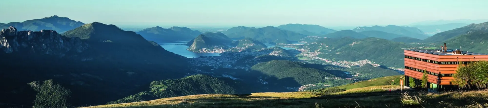
Important
Les travaux de réfection du pont sur la rivière Bello ont commencé. Par conséquent, la « Strada da Boris » (la route qui mène de la cantonale à Bidogno au parking du Monte Bar, avant la barrière) est fermée à la circulation et le parking du Monte Bar n’est pas accessible. La Capanna Monte Bar n’est donc atteignable que depuis Corticiasca.
Contactez le gardien avant de partir
Vérifiez toujours que le gardien est présent et renseignez-vous sur les conditions en montagne.
- Gardiens
- James Mauri et Serge Santese
- Téléphone
- +41 91 966 33 22
- montebar@casticino.ch
La cabane
Sur un sommet arrondi d’une beauté exceptionnelle, avec une vue à 180 degrés des Denti della Vecchia au Tamaro et, à l’ouest, sur les quatre-mille valaisans, des Mischabel au Mont Rose. Reconstruite en automne 2016 : chambres de 2, 4 et 6 lits, toilettes à chaque étage, une salle à manger pour environ 80 personnes, une salle de réunion pour 20, une grande terrasse et un local fermé avec bornes de recharge pour vélos électriques et un petit atelier, au standard Bike Hotel.
La nouvelle cabane du CAS Ticino a été inaugurée en 2016, exactement 80 ans après le premier bâtiment. Le projet « Barlume » des architectes Oliviero Piffaretti et Carlo Romano (Atelier PeR, Mendrisio), choisi parmi une trentaine de propositions, est un bâtiment simple et cubique en bois de mélèze autour de la cheminée : une lanterne dans le paysage, en dialogue avec les cabanes des sommets alentour.
La salle à manger, cœur de la cabane, a des fenêtres de tous côtés et jusqu’à 60 places ; la terrasse est accessible depuis la salle à manger et depuis la cuisine. Aux étages se trouvent des chambres de 2, 4 et 6 lits en couchettes, avec toilettes à chaque étage ; une salle d’atelier accueille réunions, cours et écoles. Au sous-sol se trouvent les sanitaires, le local ouvert aux randonneurs quand la cabane est fermée et le local à vélos avec bornes de recharge et un petit atelier, au standard Bike Hotel.
Facile à atteindre par un réseau dense de sentiers de randonnée et de VTT, avec une nature, une histoire et des paysages surprenants, c’est la destination idéale pour les familles et les écoles, ou pour une nuit à la cabane après un souper convivial.
Séjour
- Ouverture
- Toute l’année ; sur demande aussi pour des événements, dîners et repas de midi
- Gardiennage
- Tous les jours de mai à début novembre ; en hiver du vendredi midi au dimanche midi, les jours fériés et pendant les vacances scolaires
- Places
- 42, en chambres de 2, 4 et 6 lits
- Repas
- Cuisine régionale avec des produits locaux ; menus spéciaux sur réservation
- Sans gardiens
- La cabane est fermée ; seul un petit local d’entrée reste ouvert pour les urgences
La cuisine
Nous cuisinons avec passion des produits frais et de saison de la région, avec la cuisine tessinoise comme référence. Le repas de midi est servi de 11 h 30 à 15 h ; l’après-midi, il y a toujours une soupe, des assiettes froides et des gâteaux. Le souper est à 19 h : le soir, merci de réserver. Sur demande, nous préparons aussi des menus pour des occasions spéciales.
- Gâteaux maison, minestrone aux légumes et légumineuses, polenta tessinoise.
- Fromages des alpages voisins et charcuterie tessinoise.
- Grillades sur la terrasse en été, gibier en automne, fondue au fromage en hiver.
Petit-déjeuner dès 7 h 45 (dès 8 h en hiver). Les chiens ne sont pas admis dans la cabane ; les mineurs sont les bienvenus accompagnés d’un adulte. À partir de 22 h, merci de respecter ceux qui dorment.
Les gardiens
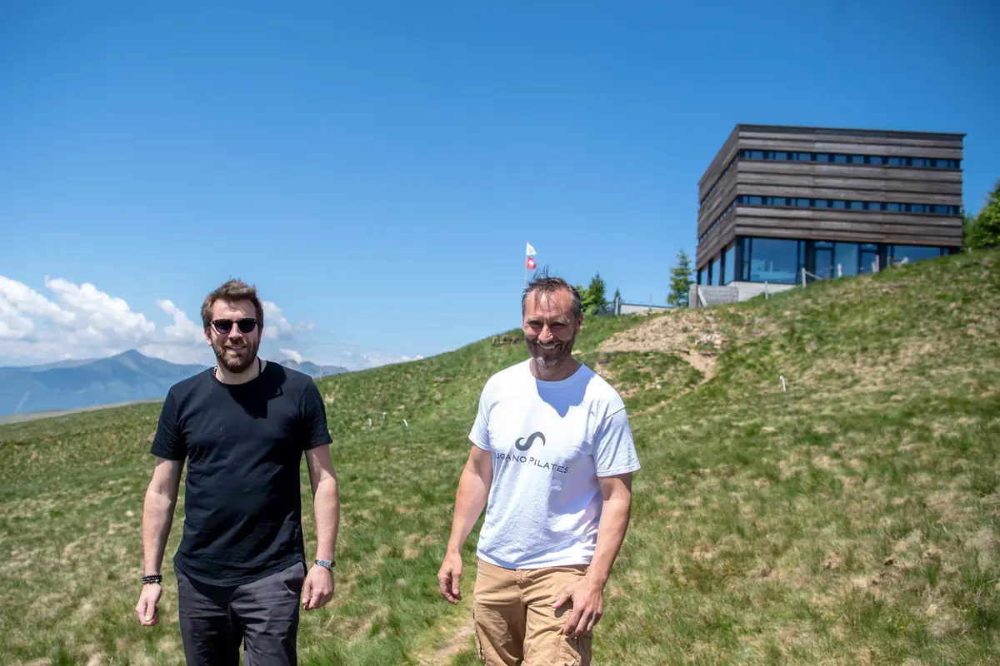
Depuis 2020, la cabane est gérée par James Mauri et Serge « Seo » Santese, qui ont travaillé dans d’excellentes cuisines du canton et d’ailleurs. Nous sommes heureux de faire ce que nous faisons : vivre ici est un choix, et surtout une belle école de vie.
James et Seo
Tarifs et réservation
RéserverMembres CAS/FAT et clubs avec droit de réciprocité
Nuitée avec demi-pension
- Enfants jusqu’à 7 ans
- Fr. 30.–
- Enfants de 8 à 14 ans
- Fr. 40.–
- Jeunes de 15 à 21 ans
- Fr. 60.–
- Adultes dès 22 ans
- Fr. 80.–
Non-membres
Nuitée avec demi-pension
- Enfants jusqu’à 7 ans
- Fr. 30.–
- Enfants de 8 à 14 ans
- Fr. 45.–
- Jeunes de 15 à 21 ans
- Fr. 65.–
- Adultes dès 22 ans
- Fr. 95.–
Chambre double
Avec lit double et linge propre
- Par personne
- Fr. 120.–
- Usage individuel
- Fr. 150.–
Familles et groupes
Familles avec 2 adultes et au moins 2 jeunes jusqu’à 15 ans ; groupes de jeunes (écoles, scouts, J+S) du lundi au jeudi
- Familles, vendredi-samedi : réduction par personne
- Fr. 5.–
- Familles, dimanche-jeudi : réduction par personne
- Fr. 10.–
- Groupes : enfants jusqu’à 15 ans
- Fr. 35.–
- Groupes : jeunes de 15 à 18 ans
- Fr. 45.–
Suppléments
Menus spéciaux pour événements à convenir avec les gardiens ; sac à viande obligatoire
- Pique-nique à emporter
- Fr. 12.–
- Thé pour la journée (1 l)
- Fr. 3.–
- Douche (par personne)
- Fr. 5.–
- Sac à viande
- Fr. 7.–
Salle d’atelier
Avec projecteur et tables pour environ 15 personnes
- Par jour, sans repas
- Fr. 200.–
- Avec repas de midi ou souper
- Fr. 100.–
- Avec demi-pension
- gratuit
- Été (du 1er mai au 8 novembre 2026) : ouvert tous les jours.
- Hiver (du 9 novembre 2026 au 30 avril 2027) : du vendredi midi au dimanche midi, toujours ouvert les jours fériés et pendant les vacances scolaires ; les autres jours sur demande. Quand la cabane est fermée, seule l’entrée avec les toilettes et les boissons reste accessible : on ne peut pas y passer la nuit.
- Réservation en ligne avec le bouton « Réserver ». Annulations et modifications sans frais jusqu’à 18 h 2 jours avant l’arrivée jusqu’à 9 personnes, 4 jours avant dès 10 personnes ; ensuite Fr. 50.– par personne et par nuit.
- Check-in de 16 h 30 à 18 h, check-out à 9 h. Les hôtes qui passent la nuit s’annoncent à l’arrivée et signent le livre d’or.
- Paiement en espèces, EC, Visa ou Twint.
Accès
À pied ou à VTT, la cabane s’atteint facilement, surtout par des sentiers adaptés aux familles. En hiver aussi, on peut monter à skis ou à raquettes, mais n’oubliez pas que les conditions en montagne peuvent être différentes de celles de la vallée. Les places de parc dans la vallée sont limitées : mieux vaut prendre les transports publics.
- De Corticiasca : 1 h 30.
- De Bidogno : 2 h.
- D’Isone par le Val Serdena et Piandanazzo : 3 h.
- De Gola di Lago : 2 h 30.
- De Scareglia ou Signôra : 3 h 30.
Itinéraires sur SuisseMobile. Carte : carte nationale 1:25 000 feuille 1333 Tesserete.
Sécurité : en hiver, la glace et la neige rendent délicats même les passages faciles, et il y a un danger d’avalanche sur les pentes raides et dans les couloirs. En été, des vaches allaitantes avec leurs veaux pâturent ici : gardez vos distances et tenez les chiens en laisse. Cyclistes, merci de respecter les randonneurs. Ne laissez pas de déchets et n’allumez pas de feu en plein air : le Monte Bar a été touché par des incendies dévastateurs par le passé.
Activités
La région offre d’innombrables possibilités de VTT, sur goudron, routes non goudronnées et singletrails, avec des boucles panoramiques une bonne partie de l’année : les itinéraires nationaux 66, 358 et 359 sont décrits par Lugano Region. Depuis la cabane, on peut aussi franchir le Passo San Lucio vers le Val Cavargna ou partir vers le nord dans le Val Serdena et jusqu’à Rivera.
La chaîne qui va de Gola di Lago jusqu’aux 2115 m du Gazzirola est sillonnée de sentiers faciles. La cabane est le but et une étape du Lugano Trekking et de l’itinéraire national 52 ; d’ici on peut rejoindre le Camoghè et le Val Morobbia. L’automne et le printemps sont les saisons idéales.

Sentiers thématiques
Sept sentiers faciles à travers l’histoire, la nature et le paysage : des porteuses de skis à la faune.
En savoir plus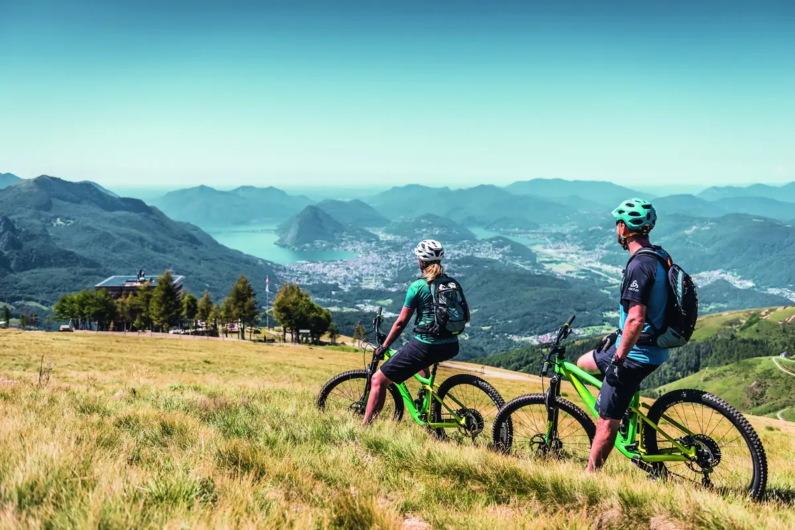
VTT
Des boucles panoramiques sur goudron, routes non goudronnées et singletrails, avec un local à vélos et des bornes de recharge à la cabane.
En savoir plus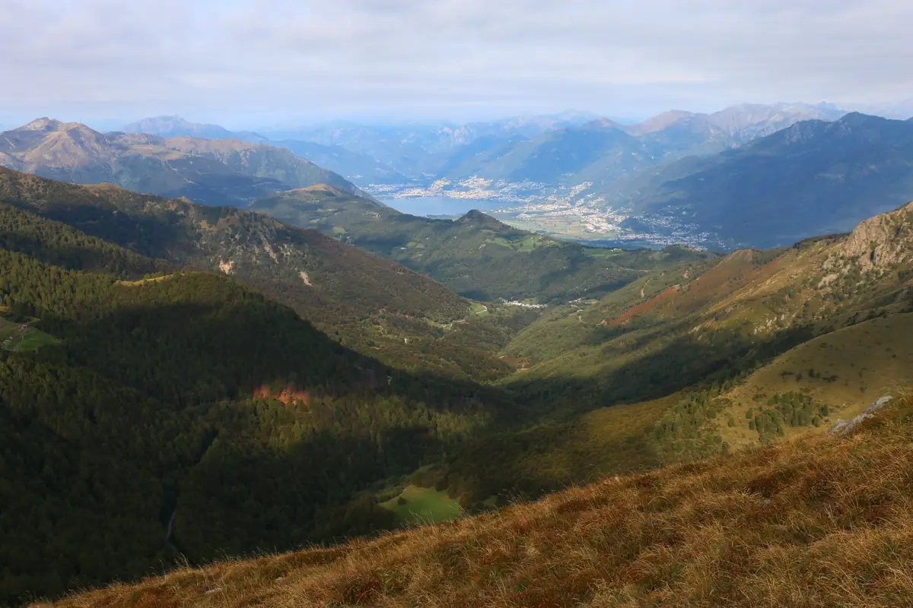
Le saviez-vous ?
L’origine du nom, les forêts disparues, les « sherpas » et les pierres à cupules du Monte Bar.
En savoir plus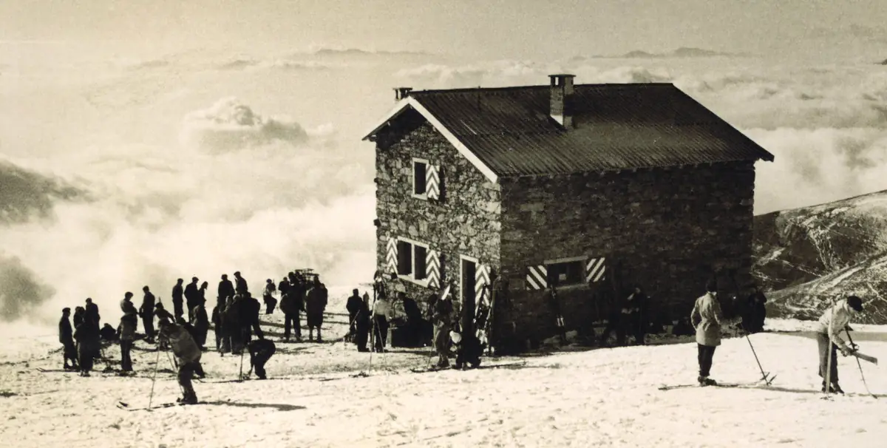
Histoire
De la première école de ski du Tessin en 1935, en passant par la cabane de 1936, jusqu’à la nouvelle cabane « Barlume » de 2016.
L’histoire de la cabaneNouvelles de la cabane
Les dernières nouvelles de la cabane, publiées par l’équipe sur Facebook (surtout en italien).
Ouvrir la page FacebookLes publications ne sont chargées depuis Facebook qu’après le clic : dès ce moment, Facebook reçoit des données sur votre visite.
Soutenir la cabane
L’entretien, les rénovations et les travaux coûtent cher : les cabanes vivent aussi grâce aux membres et aux amis de la montagne. Vous pouvez les soutenir par un don sur le compte de la section, en indiquant le nom de la cabane.
- Compte
- Banca Stato, Lugano
IBAN CH09 0076 4128 9526 1200 6 - Communication
- Capanna Monte Bar
Soutiens
La nouvelle cabane a été rendue possible par ces soutiens et par plus de 300 amis, publics et privés, qui ont contribué à sa construction. Un grand merci !
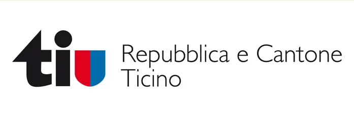
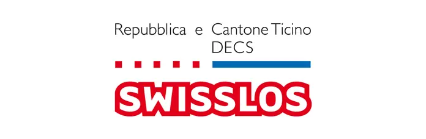
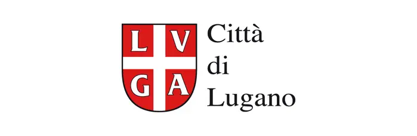
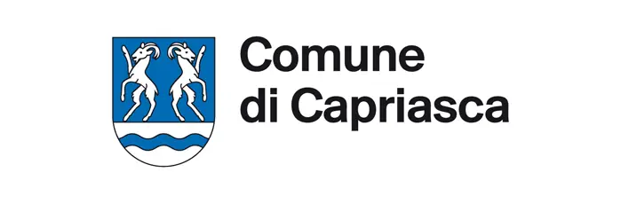
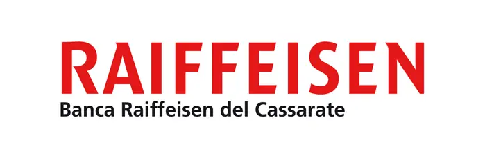
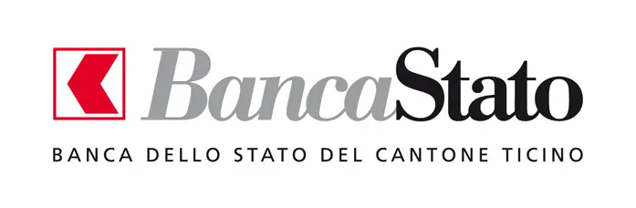
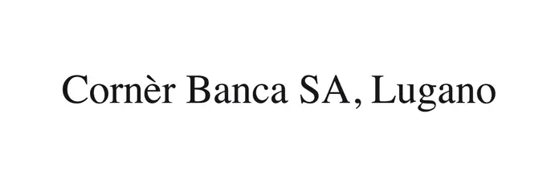
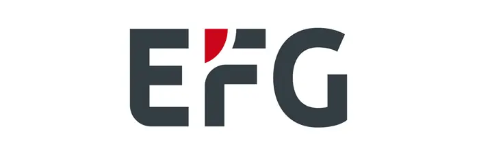
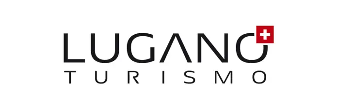
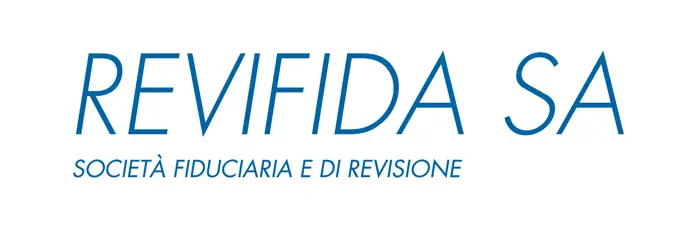
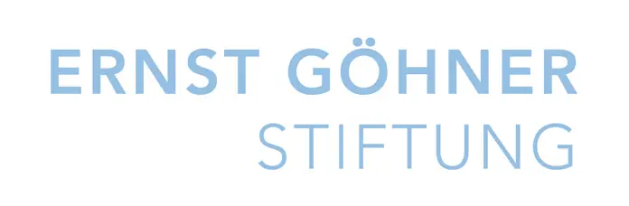
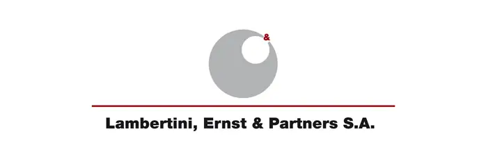
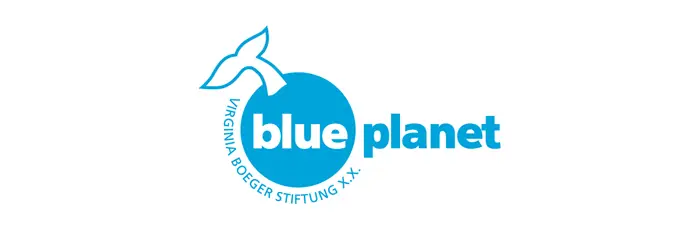
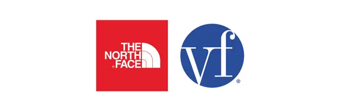
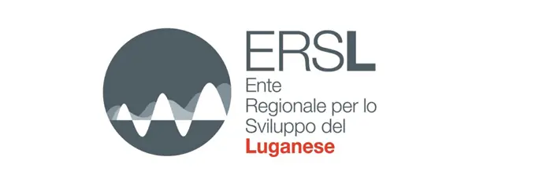